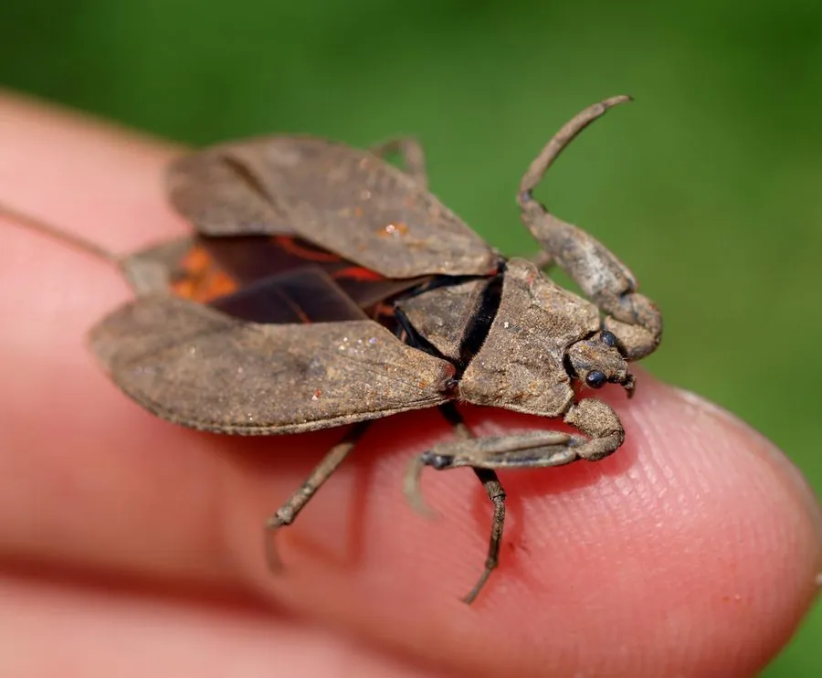

昆虫 · 动物界
蝎蝽 Nepa cinerea

形似蝎子的水生蝽，前足镰刀状、腹部末端有长呼吸管，常在水底淤泥中缓慢爬行，捕食水生小动物。
- 分类
- 门节肢动物门纲昆虫纲目半翅目科蝎蝽科属蝎蝽属
- 栖息环境
- 池塘、沟渠和稻田的浅水区，多在水底淤泥和落叶间
- 地理分布
- 欧洲、北非和亚洲的静水与缓流水体
- 保护级别
- 暂无评估
物种志
蝎蝽成虫体长 17–22 mm，体扁平，呈灰褐至黑褐色，形似一片枯叶。前足特化成镰刀状的捕捉足，腿节粗壮；腹部末端伸出一根细长的呼吸管，由两个半管合成，长度约占体长的三分之一，使它看起来像一只小蝎子。
蝎蝽分布于欧洲、北非和亚洲的静水和缓流水体，常见于池塘、沟渠和稻田的浅水区。它终生水生，多在水底淤泥、落叶和水草间缓慢爬行，行动迟钝，靠伏击捕食水生昆虫、蝌蚪和小鱼。呼吸时把腹末的呼吸管伸出水面，像潜水员的通气管一样吸取空气。雌虫产卵于水生植物的茎秆内，卵上有细长的呼吸丝伸出。蝎蝽的刺吸可致人疼痛，但它对水质变化较敏感，是湿地生态的指示物种。
形态与习性
- 食性伏击捕食水生昆虫、蝌蚪和小鱼
- 体长17–22 mm
- 呼吸管腹末细长呼吸管，约占体长三分之一
- 捕捉足前足镰刀状，腿节粗壮
- 繁殖卵产在水生植物茎秆内，卵顶伸出呼吸丝
- 防御刺吸可致人疼痛，受惊时装死不动
趣味知识
- 蝎蝽腹末的长管是呼吸管，换气时像潜水员的通气管一样伸出水面。
- 它的前足像两把镰刀，捕捉猎物时能闪电般合拢。
- 蝎蝽常把自己埋在淤泥和落叶里，只露出眼睛等待猎物靠近。